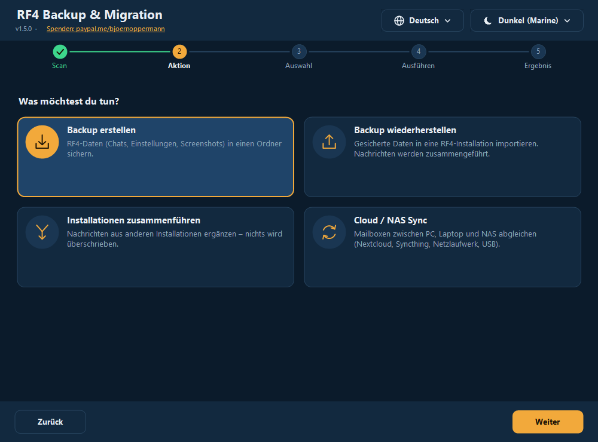
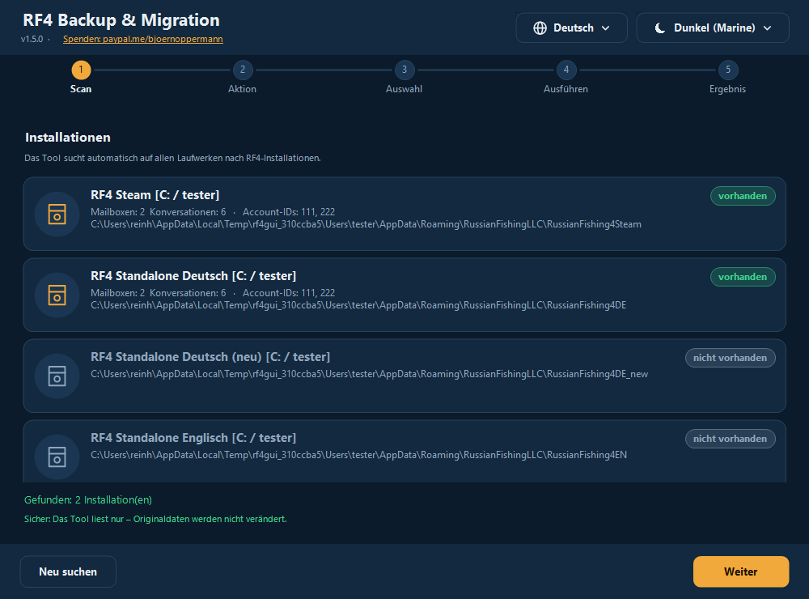
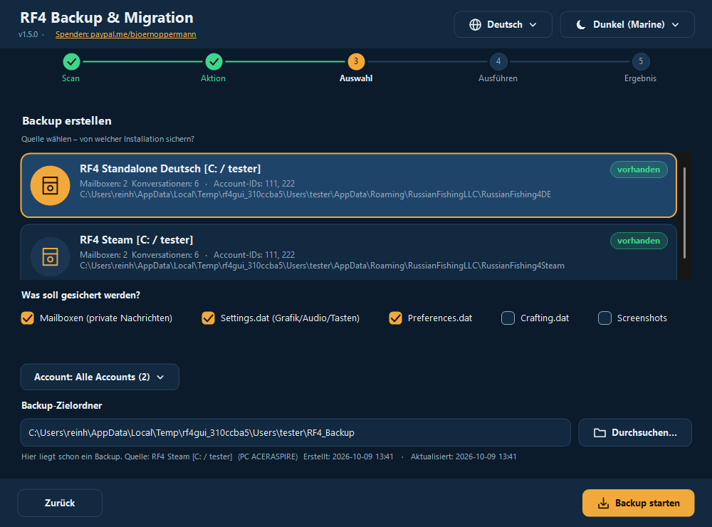
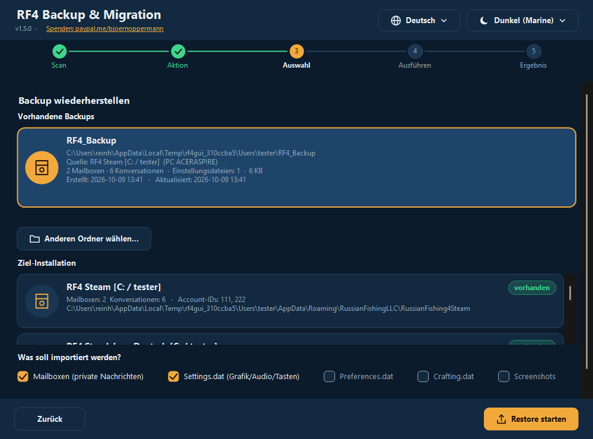
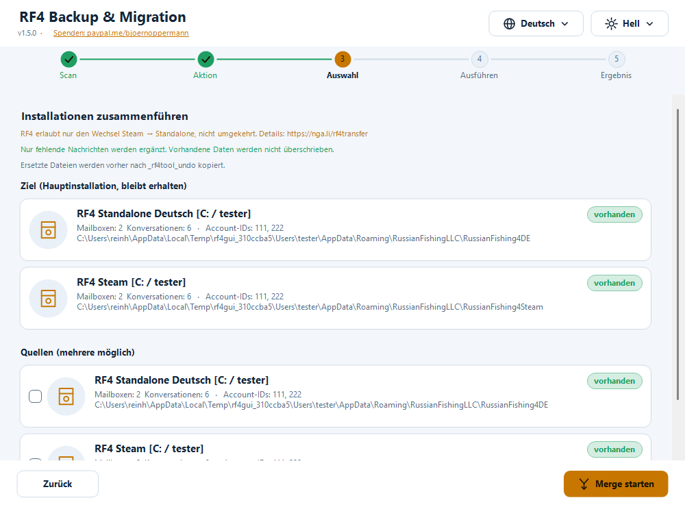
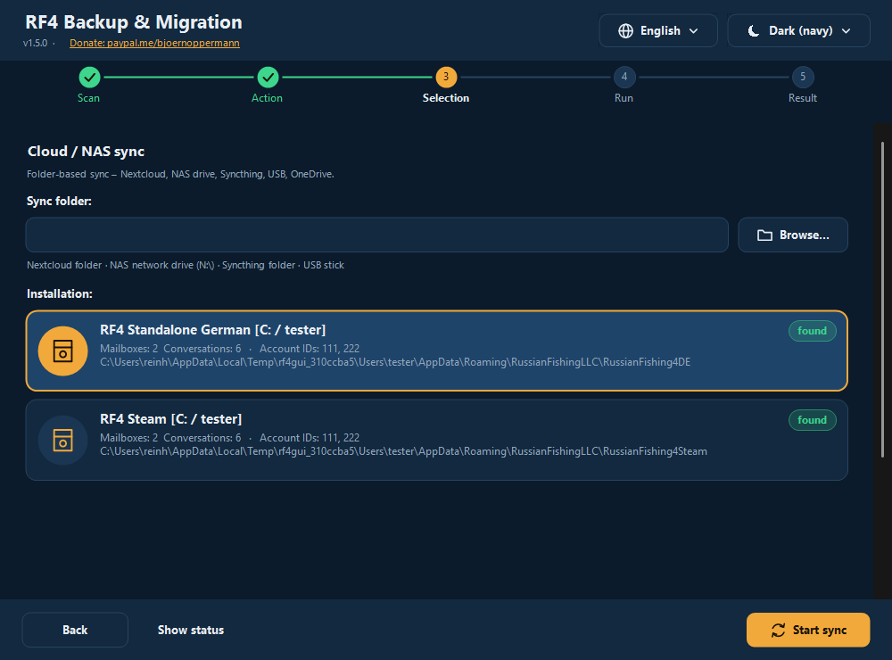
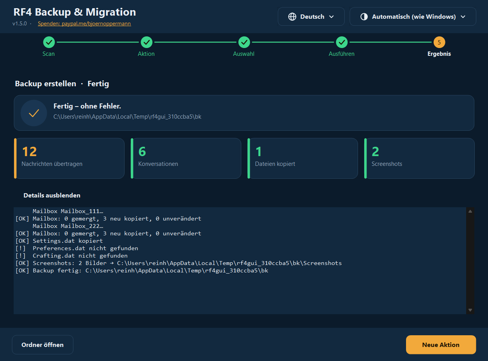
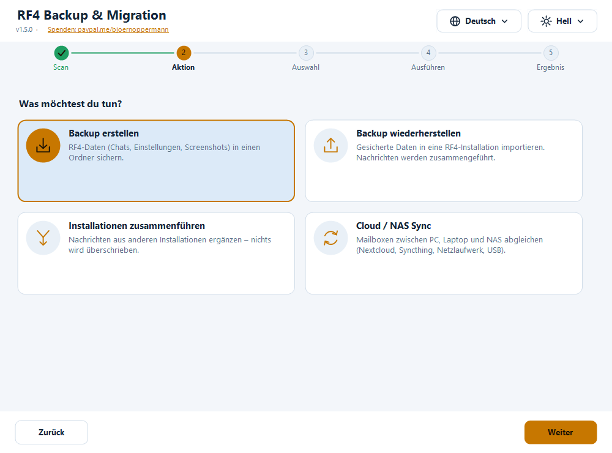
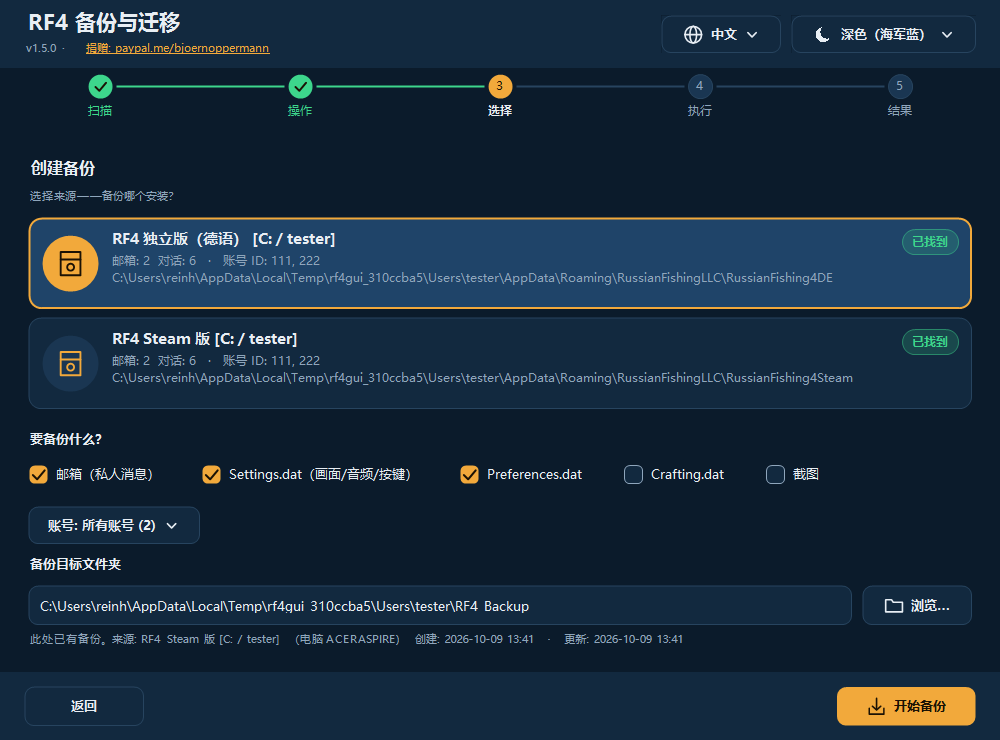
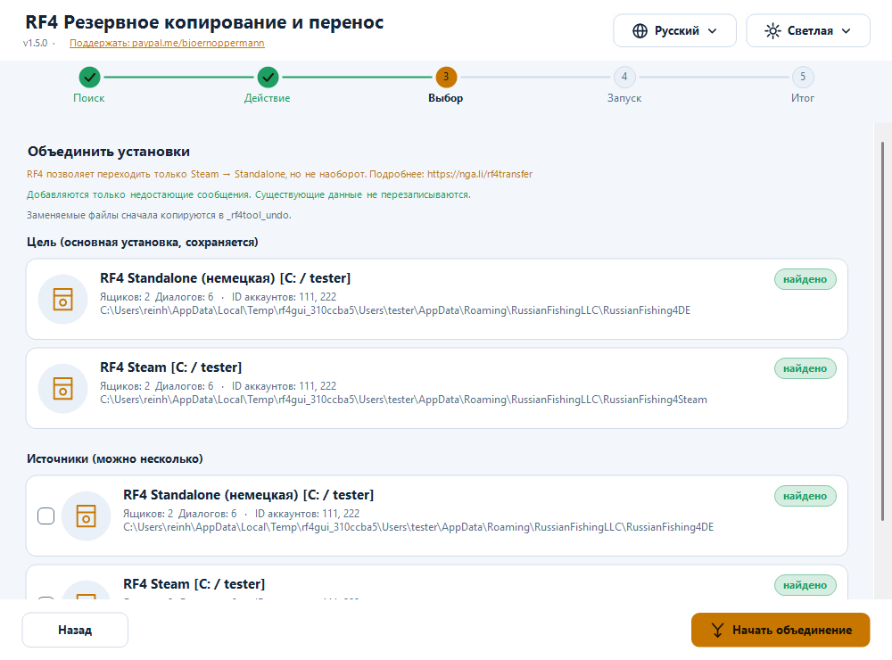

RF4 — Backup & Migration Tool
Deutsch · English · 中文 · Русский
Kostenloses Werkzeug zum Sichern, Wiederherstellen, Zusammenführen und Synchronisieren deiner Russian Fishing 4-Spielerdaten: Mailboxen (In-Game-Chats), Einstellungen und Screenshots. Für Windows (grafische Oberfläche + Terminal, PowerShell) und Linux/macOS (Bash).
- 🌍 Vier Sprachen komplett umschaltbar: Deutsch · English · 中文 · Русский — weitere Sprachen als einfache Textdatei ergänzbar
- 🎨 Dunkel und Hell, automatisch nach Windows-Einstellung (oder manuell) — weitere Designs als Textdatei ergänzbar
- 🖥️ Scharf bei jeder Bildschirmskalierung (100 % … 200 %, mehrere Monitore)
- 🛡️ Es wird nichts gelöscht. Ersetzte Dateien landen vorher in einem Undo-Ordner
- 🔍 Findet Standalone, Steam, Wine, Proton, andere Benutzer und andere Laufwerke automatisch

📄 Anleitung & Blog: nga.li/rf4b · 📥 Download: nga.li/rf4dl · 💻 Quellcode: nga.li/rf4git
Inhalt
- Schnellstart
- Installation
- Die grafische Oberfläche
- Das Terminal-Programm
- Funktionen im Detail
- Sprachen und Designs (auch eigene)
- Wo liegen meine Daten?
- Sicherheit & Verifikation
- Häufige Fragen & Fehlerbehebung
- Deinstallation
- Einstellungen, Umgebungsvariablen
- Entwicklung, Tests, Build
- Änderungen
Schnellstart
PC-Wechsel oder Neuinstallation in drei Schritten:
- Alter PC: Programm starten → Backup erstellen → Quelle wählen → Backup starten.
- Backup-Ordner (Standard:
Benutzer\<Name>\RF4_Backup) per USB-Stick, NAS oder Cloud auf den neuen PC bringen. RF4 dort einmal starten und beenden. - Neuer PC: Programm starten → Backup wiederherstellen → dein Backup in der Liste wählen → Ziel-Installation wählen → Restore starten.
Spielstand, Inventar und Angelausrüstung liegen auf den RF4-Servern und sind auf dem neuen PC automatisch da. Dieses Tool kümmert sich um das, was lokal liegt: Chats, Einstellungen, Screenshots.
Installation
| Variante | Für wen | So geht’s |
|---|---|---|
Installer (rf4sa-backup-full-setup-v1.5.0.exe) | Windows, empfohlen | Doppelklick, weiter, fertig. Legt Startmenü-Einträge (GUI, Terminal, Anleitung mit Screenshots, Deinstallieren) an; eine Seite mit anklickbaren Links (Spenden, Blog, Download, Quellcode) gehört dazu. Kein Admin nötig. |
rf4sa-backup-gui-setup-… / …-cli-setup-… | nur GUI bzw. nur Terminal | wie oben |
| Ohne Installer | Windows | Rechtsklick auf rf4sa-backup-gui.ps1 → Mit PowerShell ausführen |
| Linux / macOS | Bash | bash rf4sa-backup.sh (benötigt bash ≥ 4 und python3) |
Voraussetzungen Windows: Windows PowerShell 5.1 (ab Windows 10 vorinstalliert; Windows 7 mit WMF 5.1). Python wird unter Windows nicht benötigt.
Hinweis „Skriptausführung deaktiviert“: Beim Rechtsklick-Start setzt Windows die Ausführungsrichtlinie automatisch für diesen einen Start. Falls trotzdem eine Meldung kommt: powershell -ExecutionPolicy Bypass -File rf4sa-backup-gui.ps1
Die grafische Oberfläche
Eine Schritt-für-Schritt-Führung mit fünf Stationen oben: Scan → Aktion → Auswahl → Ausführen → Ergebnis. Oben rechts wählst du jederzeit Sprache (🌐) und Design (☀/☾) — die Oberfläche wechselt sofort, ohne Neustart.
1. Scan
Das Programm sucht alle RF4-Installationen: eigener Benutzer, andere Benutzer, alle Laufwerke. Gefundene sind markiert, mögliche (noch nicht vorhandene) Ziele grau.

2. Aktion
Vier Karten: Backup erstellen · Backup wiederherstellen · Installationen zusammenführen · Cloud/NAS-Sync.
3. Auswahl
Backup erstellen: Quelle wählen, anhaken was gesichert werden soll (Mailboxen, Settings.dat, Preferences.dat, Crafting.dat, Screenshots), bei mehreren Accounts optional nur einen Account, Zielordner festlegen.

Backup wiederherstellen: Oben siehst du alle vorhandenen Backups (Standardordner, früher benutzte Ordner und deren Unterordner) mit Inhalt, Größe und Datum — das neueste zuerst. Zu jedem Backup steht, von welcher Installation und von wann es stammt (Quelle, PC-Name, erstellt/aktualisiert — gespeichert in rf4-backup.info im Backup-Ordner). Mit Anderen Ordner wählen… nimmst du ein Backup von woanders (z. B. vom USB-Stick). Dann Ziel-Installation wählen; angehakt ist automatisch alles, was das Backup enthält.

Zusammenführen: Ziel (Hauptinstallation) wählen, eine oder mehrere Quellen anhaken. Nur fehlende Nachrichten werden ergänzt.

Cloud/NAS-Sync: Sync-Ordner angeben (Nextcloud, Syncthing, NAS-Laufwerk, USB …), Installation wählen, Sync starten. Status anzeigen zeigt, was schon im Sync-Ordner liegt.

4./5. Ausführen und Ergebnis
Während der Arbeit zeigt ein Fortschrittsbalken die aktuelle Zeile. Danach siehst du Kennzahlen (ergänzte Nachrichten, Konversationen, kopierte Dateien, Screenshots, übersprungen, Fehler). Details anzeigen klappt das ausführliche Protokoll auf; Ordner öffnen öffnet das Ziel im Explorer.

Hell, Dunkel, andere Sprachen



Design: Automatisch (wie Windows) ist Standard — wechselst du in Windows zwischen hellem und dunklem Modus, zieht das Programm sofort mit (auch während es läuft). Du kannst ein festes Design wählen. Sprache: beim ersten Start nach der Windows-Sprache, sonst Englisch; die Wahl wird gespeichert.
Tastatur: Tab wechselt zwischen Karten/Schaltflächen, Leertaste/Enter wählt aus. Hochauflösende Monitore: Das Programm ist DPI-bewusst (Per-Monitor v2) — Text und Symbole werden nativ gezeichnet, nicht hochskaliert. Beim Verschieben auf einen anderen Monitor passt sich alles an.
Das Terminal-Programm
powershell -ExecutionPolicy Bypass -File rf4sa-backup.ps1 # Sprache automatisch
powershell -ExecutionPolicy Bypass -File rf4sa-backup.ps1 -Lang zh # fest: de | en | zh | ru | eigene
╔════════════════════════════════════════════════════════════╗
║ RF4 Backup & Migration v1.5.0 ║
║ RF4: nga.li/rf4de · Blog: nga.li/rf4b ║
║ Spenden: paypal.me/bjoernoppermann ║
╚════════════════════════════════════════════════════════════╝
[1] Scan – Alle Installationen anzeigen
[2] Backup – Daten sichern
[3] Restore – Aus Backup importieren
[4] Merge – Installationen zusammenführen
[5] Sync – Mit Cloud/NAS abgleichen
[L] Sprache wechseln (Deutsch)
[0] Beenden
- Menüs: Nummer eingeben. Mehrfachauswahl: Nummern ein-/ausschalten (
1 3 4oder1,3),a= alle,n= keine,Enter= weiter,0= zurück. - Restore bietet die vorhandenen Backups als Liste an (mit Pfad, Inhalt, Datum) oder die manuelle Pfadeingabe.
- Nach jeder Aktion gibt es eine Zusammenfassung mit Kennzahlen.
- Rahmen und Symbole sind Unicode, auch mit 中文 sauber ausgerichtet (Doppelbreite wird berücksichtigt). Mit
RF4_ASCII=1gibt es eine reine ASCII-Darstellung (für alte Konsolen/Logs). - Für 中文 am besten Windows Terminal verwenden (die klassische Konsole kann je nach Schrift Kästchen zeigen).
Linux / macOS:
bash rf4sa-backup.sh # Sprache automatisch (LANG), oder:
bash rf4sa-backup.sh -l ru
Gefunden werden: Windows-Partitionen (/mnt/*, /run/media/*/*), Wine-Prefixes (~/.wine, ~/.local/share/wineprefixes/*, Lutris), Steam-Proton (…/steamapps/compatdata/*, auch Flatpak). Gleiche Menüs wie unter Windows.
Funktionen im Detail
Was wird gesichert?
| Element | Inhalt |
|---|---|
| Mailboxen | In-Game-Chats (Mailbox_<AccountID>\*.dat, JSON). Lokal gespeichert, nicht auf den RF4-Servern. |
| Settings.dat | Grafik, Audio, Tastenbelegung |
| Preferences.dat | weitere Spieleinstellungen |
| Crafting.dat | Crafting-Daten |
| Screenshots | Dokumente\Russian Fishing 4\Screenshots (auch in Unterordnern; vorhandene Namen werden nie überschrieben) |
Backup
Kopiert die gewählten Elemente in den Zielordner. Mailboxen werden dabei zusammengeführt, nicht blind überschrieben — ein Backup in einen bereits vorhandenen Ordner ist also ein inkrementelles Backup. Bei abweichenden Einstellungsdateien fragt das Programm vorher.
Restore
Importiert ein Backup in eine Installation (auch in eine noch leere, neue). Nachrichten werden zusammengeführt, Einstellungsdateien nur nach Rückfrage ersetzt. Das Programm warnt, wenn RF4 noch läuft. Bitte das Spiel vorher beenden, sonst überschreibt es deine Änderungen beim Beenden.
Merge (Zusammenführen)
Ergänzt in der Ziel-Installation alle Nachrichten, die dort fehlen:
- Jede Nachricht hat eine eindeutige ID (
meta.id). Es wird über die ID dedupliziert — nichts wird doppelt. - Neue Nachrichten werden nach Zeit (
meta.created) einsortiert. - Eine Datei wird nur geschrieben, wenn wirklich neue Nachrichten dazukommen. Geschrieben wird über eine Temp-Datei, die erst nach erfolgreicher Gegenprobe (JSON wieder lesbar) das Original ersetzt.
- Das Original wird vorher in den Undo-Ordner kopiert.
Typische Fälle: Steam → Standalone, Steam → Steam (neuer PC), Standalone → Standalone, mehrere alte Installationen → eine neue.
RF4 erlaubt offiziell nur den Wechsel Steam → Standalone, nicht umgekehrt. Details: nga.li/rf4transfer
Cloud / NAS-Sync
Bidirektional über einen gemeinsamen Ordner (Unterordner RF4_Sync):
- Lokal → Sync: neue Nachrichten werden in den Sync-Ordner gemergt.
- Sync → Lokal: neue Nachrichten aus dem Sync-Ordner (von anderen Geräten) werden lokal gemergt.
- Einstellungsdateien: die neuere Datei (Zeitstempel) gewinnt; bei Gleichstand/Identität passiert nichts.
Auf jedem Gerät denselben Ordner verwenden. Funktioniert mit Nextcloud, Syncthing, OneDrive, Netzlaufwerk, USB-Stick.
Der Undo-Ordner
Bei Restore, Merge und Sync wird jede Datei, die ersetzt wird, vorher kopiert nach:
<Installation>\_rf4tool_undo\<Datum_Uhrzeit>\<Ordner>\<Datei>
Zum Rückgängigmachen die Datei von dort zurückkopieren. Der Ordner stört RF4 nicht; du kannst ihn jederzeit selbst löschen. Das Programm löscht ihn nie.
Sprachen und Designs
Alles ist modular: Sprachen und Designs sind einfache Textdateien. Eingebaut sind die vier Sprachen und zwei Designs; weitere werden beim Start automatisch gefunden — ohne Neukompilieren.
Eigene Sprache hinzufügen
- Vorlage kopieren: [
examples/template.lang](examples/template.lang) nach
%APPDATA%\rf4-backup\lang\pt.lang (oder in einen Ordner lang\ neben das Skript; Linux: ~/.config/rf4-backup/lang/pt.lang).
- Oben
@code=ptund@name=Portuguêssetzen, die Texte rechts vom=übersetzen. Fehlende Zeilen fallen automatisch auf Englisch zurück — du kannst also auch nur Teile übersetzen. - Programm neu starten: die Sprache steht im Sprachmenü (und wird bei passender Windows-Sprache sogar automatisch gewählt).
Platzhalter {0}, {1} müssen im Text bleiben (sie werden durch Namen/Zahlen ersetzt). Dateikodierung: UTF-8.
@code=pt
@name=Português
app_title=RF4 Cópia e Migração
menu_backup=Cópia – guardar dados
Eigenes Design hinzufügen
Vorlage [examples/template.theme](examples/template.theme) nach %APPDATA%\rf4-backup\themes\<name>.theme kopieren und Farben (#RRGGBB) anpassen. @base=dark|light legt fest, welchen Windows-Modus es bei „Automatisch“ vertritt. Nicht gesetzte Farben kommen aus dem Dunkel-Design. Es erscheint im Design-Menü.
Eingebaut
| Design | Beschreibung |
|---|---|
| Dunkel (Marine) | tiefes Marineblau, warmes Bernstein als Akzent |
| Hell | helles Blaugrau, dunkleres Bernstein (Kontrast geprüft) |
Die Kontraste (Text/Hintergrund ≥ 7:1, Schaltflächen ≥ 4,5:1) werden von den Tests geprüft; das gilt auch für eigene Designs, wenn du die Tests mit deiner Datei laufen lässt.
Wo liegen meine Daten?
%APPDATA%\RussianFishingLLC\<Variante>\Mailbox_<AccountID>\*.dat Chats (JSON, UTF-8 mit BOM)
%APPDATA%\RussianFishingLLC\<Variante>\Settings.dat | Preferences.dat | Crafting.dat
Dokumente\Russian Fishing 4\Screenshots
| Ordnername | Bezeichnung |
|---|---|
RussianFishing4DE | RF4 Standalone Deutsch |
RussianFishing4DE_new | RF4 Standalone Deutsch (neu) |
RussianFishing4EN | RF4 Standalone Englisch |
RussianFishing4Steam | RF4 Steam |
| (jeder weitere Ordner dort) | wird automatisch erkannt |
Unter Linux liegt derselbe Pfad im jeweiligen Wine-/Proton-Prefix (…/drive_c/users/<name>/AppData/Roaming/RussianFishingLLC/…).
Das Tool selbst speichert (nur Einstellungen, keine Spieldaten): %APPDATA%\rf4-backup\settings.json (Sprache, Design, Sync-Ordner, zuletzt benutzte Backup-Ordner) bzw. ~/.config/rf4-backup/settings.conf.
Sicherheit & Verifikation
- Es wird nichts gelöscht — weder Spieldaten noch Backups noch der Undo-Ordner.
- Scan und Backup lesen nur aus der Installation.
- Schreibende Aktionen (Restore/Merge/Sync) kopieren ersetzte Dateien vorher in den Undo-Ordner; Nachrichten-Dateien werden atomar mit Gegenprobe geschrieben und nur bei echten Änderungen.
- Vor Restore/Merge/Sync wird geprüft, ob RF4 läuft (Warnung) — nur der Spielprozess (
rf4_x64/rf4_x32) zählt, ein offener Launcher oder Installer löst keine Warnung aus. - Unerwartete Fehler lassen das Programm nicht mehr abstürzen: es zeigt eine Meldung und schreibt Details nach
%APPDATA%\rf4-backup\error.log. - Kein Netzwerkzugriff, keine Telemetrie. Der Quellcode ist vollständig lesbar (die ausgelieferten
.ps1/.sh-Dateien sind der Code).
Prüfsummen: siehe CHECKSUMS.txt.
Get-FileHash .\rf4sa-backup-gui.ps1 -Algorithm SHA256 # Windows
sha256sum rf4sa-backup.sh # Linux
Vergleiche den Hash vor dem ersten Start mit der Datei CHECKSUMS.txt (oder dem Wert auf nga.li/rf4dl).
Häufige Fragen & Fehlerbehebung
„Keine Installation gefunden“ RF4 muss mindestens einmal gestartet worden sein (dann legt es den Datenordner an). Prüfe, ob %APPDATA%\RussianFishingLLC existiert. Installationen auf anderen Laufwerken werden gefunden, wenn dort ein Users-Ordner liegt; sonst beim Restore manuell den Zielpfad wählen.
Mein Backup erscheint nicht in der Liste Die Liste zeigt den Standardordner RF4_Backup, früher benutzte Ordner und je eine Ebene darunter. Ein Ordner gilt als Backup, wenn er Mailbox_*-Ordner, eine der .dat-Dateien oder einen Screenshots-Ordner enthält. Anderen Ort über Anderen Ordner wählen….
Nach dem Restore sehe ich keine Chats RF4 muss beendet gewesen sein, als du importiert hast. Importiere erneut (idempotent) oder kopiere aus dem Undo-Ordner zurück. Prüfe außerdem die Account-ID: Chats liegen unter der ID deines Kontos (Mailbox_<ID>).
„Das Skript kann nicht ausgeführt werden“ powershell -ExecutionPolicy Bypass -File <Datei>; bei heruntergeladenen Dateien ggf. Rechtsklick → Eigenschaften → Zulassen.
中文 / Русский zeigt Kästchen im Terminal Windows Terminal verwenden oder eine Schriftart mit CJK/Kyrillisch wählen. Die GUI ist davon nicht betroffen.
Die Liste zeigt nicht alle Einträge Sie ist scrollbar: Mausrad (auch direkt über einem Eintrag) oder der Scrollbalken rechts. Das Fenster lässt sich vergrößern.
Die GUI ist zu groß für meinen Bildschirm Die Startgröße richtet sich nach dem Bildschirm; das Fenster ist in der Größe veränderbar, der Inhalt scrollt bei Platzmangel.
Steam Cloud überschreibt Dateien? Möglich bei Steam-Installationen, wenn Steam Cloud für RF4 aktiv ist. Nach einem Restore Steam ggf. offline starten oder die Cloud-Synchronisation für das Spiel kurz deaktivieren.
**Linux: python3 fehlt** sudo apt install python3 (Debian/Ubuntu). Python wird nur zum Zusammenführen der JSON-Dateien benötigt.
Deinstallation
- Installer-Variante: Startmenü → RF4 Backup Tool → RF4 Backup Tool deinstallieren (oder Windows-Einstellungen → Apps). Der Deinstaller entfernt nur die Programmdateien und fragt, ob auch die gespeicherten Einstellungen (Sprache, Design, Sync-Ordner, eigene Sprach-/Designdateien) gelöscht werden sollen. Deine RF4-Spieldaten und deine Backups werden nie angefasst.
- Ohne Installer: einfach die Dateien löschen. Optional den Ordner
%APPDATA%\rf4-backup(Linux:~/.config/rf4-backup).
Einstellungen, Umgebungsvariablen
| Variable | Wirkung |
|---|---|
RF4_LANG=xx | Sprache festlegen (de, en, zh, ru oder eigene) |
RF4_ASCII=1 | Terminal: reine ASCII-Darstellung |
RF4_BACKUP_DIRS=a;b (Linux: a:b) | zusätzliche Ordner, in denen nach Backups gesucht wird |
RF4_SCAN_USERS=a;b (Linux: a:b) | zusätzliche „Users“-Ordner, die nach Installationen durchsucht werden |
RF4_NO_DRIVE_SCAN=1 | nicht alle Laufwerke durchsuchen |
RF4_THEME_BASE=dark|light | Windows-Modus für „Automatisch“ erzwingen (Tests) |
RF4_GUI_SCALE=1.5 | Skalierung der GUI erzwingen (Tests/Screenshots) |
Entwicklung, Tests, Build
Der Quellcode liegt in src/:
| Datei | Inhalt |
|---|---|
core.ps1 | gemeinsame Logik (Scan, Merge, Backup/Restore, Sync, Backups finden, Statistik, Konfiguration, Laden von Sprachen/Designs) |
lang/*.lang | alle Texte (eine Datei je Sprache) |
themes/*.theme | Farben (eine Datei je Design) |
ui.cs | selbst gezeichnete GUI-Bausteine (Buttons, Karten, Fortschritt, Stepper …), DPI-bewusst |
gui.ps1, cli.ps1 | Oberflächen |
cli.sh | Linux/macOS-Skript |
build.ps1 erzeugt daraus die ausgelieferten Einzeldateien (Sprachen, Designs und C#-Code werden eingebettet; die Bash-Sprachtabelle wird aus den .lang-Dateien erzeugt — eine Quelle für alle Plattformen).
powershell -ExecutionPolicy Bypass -File build.ps1
powershell -ExecutionPolicy Bypass -File tests\Test-Core.ps1 [-RealDataDir <Mailbox-Ordner>] # Logik, Sprachen/Themes, Kontraste, Merge, Sync
powershell -ExecutionPolicy Bypass -File tests\Test-Cli.ps1 # Terminal: alle Sprachen, Rahmenbreite, Abläufe
powershell -STA -ExecutionPolicy Bypass -File tests\Test-Gui.ps1 # GUI: Panels × Design × Sprache × Skalierung, Überlauf, Abläufe, Screenshots
bash tests/test-sh.sh # Linux-Skript
powershell -STA -ExecutionPolicy Bypass -File tests\Test-RealFlow.ps1 # alle Funktionen mit echten Dialogen auf Fake-Installationen im echten Profil
Gefahrlos mit realistischen Daten testen: tools\fake-installs.ps1 -Create legt aus einer echten Installation die Fake-Installationen RussianFishing4TEST_A/_B/_C an (überlappende Konversationen, zweiter Account, abweichende Einstellungen); -Remove löscht nur solche mit Marker-Datei. Die Originale werden nie verändert.
Neuer Text: Schlüssel in alle src/lang/*.lang eintragen (Tests prüfen, dass jeder Schlüssel in jeder eingebauten Sprache vorhanden ist und die Platzhalter übereinstimmen), dann build.ps1. Installer: installer/*.iss mit Inno Setup 6 (ISCC.exe installer\rf4sa-backup-full.iss).
Änderungen
1.5.0
- Neue Oberfläche: komplett neu gezeichnet, scharf bei jeder DPI, Dunkel/Hell automatisch nach Windows, Sprach- und Design-Menü im Kopf, Karten statt Listen, Stepper, Fortschrittsbalken, Ergebnis mit Kennzahlen. Das Log-Fenster am unteren Rand entfällt (Details einklappbar).
- Vorhandene Backups werden in Restore (GUI, Terminal, Bash) aufgelistet; benutzte Ordner werden gemerkt.
- Modular: Sprachen als
lang/*.lang, Designs alsthemes/*.theme— eigene Dateien werden automatisch erkannt. - Terminal und Bash: Rahmen/Symbole (CJK-breitenrichtig), farbige Zusammenfassung, ASCII-Fallback.
- Deinstallation: Startmenü-Eintrag und Abfrage zu den gespeicherten Einstellungen; Beispiel-Vorlagen unter
examples/. - Backup-Info: jedes Backup merkt sich Quelle (Installation, PC) und Zeitpunkte; Anzeige in GUI, Terminal und Bash.
- Fix: Der Meldungsdialog (zum Beispiel die RF4-läuft-Warnung) stürzte mit einem .NET-Fehler ab und brach Restore/Merge/Sync ab; ein offener Launcher löste die Warnung fälschlich aus; das Mausrad scrollte Listen nicht.
- Anleitung als HTML (mit Screenshots) im Startmenü, anklickbare Links im Installer, klickbarer Spenden-Link in der GUI.
- Mehr Tests (Core 116, Terminal 42, GUI 74, Bash 108, Echtdaten-Durchlauf 36) inkl. Kontrastprüfung der Designs.
1.4.0 gemeinsamer Kern, komplette Übersetzung (DE/EN/ZH/RU), Fixes (eigene Installation wurde nie gefunden, Abstürze bei einzelnen Dateien, Screenshots beim Restore), Undo-Ordner, Warnung bei laufendem RF4. 1.3.0 i18n (nur Menüs), InnoSetup-Installer · 1.2.0 Cloud/NAS-Sync · 1.1.x Account-IDs, Multi-Quellen-Merge · 1.0.0 Erstveröffentlichung
Links & Lizenz
| RF4 Offiziell (DE / EN) | nga.li/rf4de · nga.li/rf4en |
| RF4 auf Steam | nga.li/rf4steam |
| Steam → Standalone Transfer | nga.li/rf4transfer |
| Forum | nga.li/rf4forum |
| Artikel & Anleitung | nga.li/rf4b |
| Quellcode (Codeberg) | codeberg.org/Natural78/rf4-backup-tool |
MIT License — frei verwendbar, veränderbar und weitergebbar. Wenn dir das Tool gefällt: paypal.me/bjoernoppermann ☕